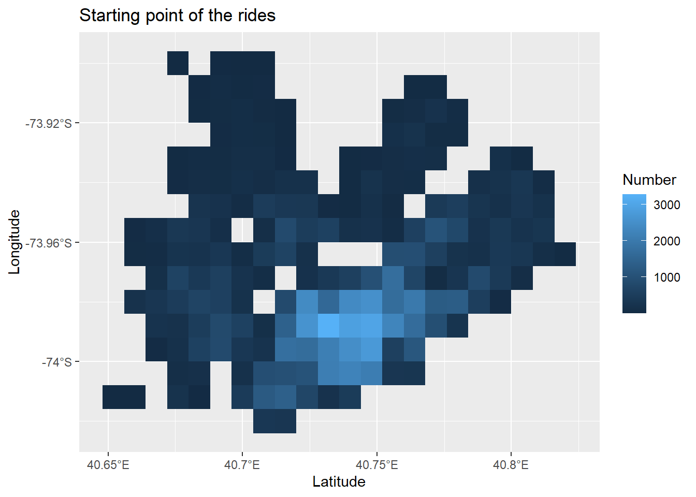

Explore Citi Bike Data
Przemyslaw Lagosz
24-03-2021
Citi Bike Data
Welcome to the off platform project focused on visualization. In this project, we will be exploring data associated with the New York City bike share program, Citi Bike! Remember, it may be easiest to read these instructions by clicking on the “Preview” button in RStudio.
There are over 850 Citi Bike stations in New York City — users check a bike out from a starting station and then dock that bike at a different station when they reach their destination. Citi Bike offers a variety of memberships, but most memberships allow for trips between 30 and 45 minutes — this will be relevant once we start digging into the dataset.
Citi Bike publically releases a variety of datasets. We’ve included a dataset containing information about individual trips from January of 2020. If you’d like to download a more recent dataset, or investigate other data that Citi Bike provides, take a look at their System Data page. There are so many interesting questions that you can investigate with this data — we’re about to walk you through a few, but we’d love to see what else you can discover!
Investigate the Data
Wczytanie danych.
# Load the data set into a data frame
all_data <- read.csv("C:/R/CodeAcademy/Citibike_Project/january_trips_subset.csv")
dim(all_data)## [1] 100000 16# Wgranie bibliotek
library(ggplot2)
library(tidyverse)
library(kableExtra)# Investigate the data
head(all_data) %>%
mine_kable()| X | tripduration | starttime | stoptime | start.station.id | start.station.name | start.station.latitude | start.station.longitude | end.station.id | end.station.name | end.station.latitude | end.station.longitude | bikeid | usertype | birth.year | gender |
|---|---|---|---|---|---|---|---|---|---|---|---|---|---|---|---|
| 1 | 1420 | 2020-01-12 11:58:32.4220 | 2020-01-12 12:22:12.5870 | 3256 | Pier 40 - Hudson River Park | 40.72771 | -74.01130 | 412 | Forsyth St & Canal St | 40.71582 | -73.99422 | 41482 | Customer | 1994 | 1 |
| 2 | 539 | 2020-01-05 09:37:51.3740 | 2020-01-05 09:46:50.7600 | 128 | MacDougal St & Prince St | 40.72710 | -74.00297 | 168 | W 18 St & 6 Ave | 40.73971 | -73.99456 | 19904 | Subscriber | 1965 | 2 |
| 3 | 238 | 2020-01-25 10:47:55.5770 | 2020-01-25 10:51:53.9540 | 276 | Duane St & Greenwich St | 40.71749 | -74.01046 | 327 | Vesey Pl & River Terrace | 40.71534 | -74.01658 | 38561 | Subscriber | 1944 | 1 |
| 4 | 189 | 2020-01-17 08:03:12.6320 | 2020-01-17 08:06:21.8730 | 3689 | W 104 St & Amsterdam Ave | 40.79904 | -73.96649 | 3328 | W 100 St & Manhattan Ave | 40.79500 | -73.96450 | 35170 | Subscriber | 1960 | 1 |
| 5 | 741 | 2020-01-23 22:42:59.9520 | 2020-01-23 22:55:21.5230 | 3420 | Douglass St & 3 Ave | 40.68021 | -73.98433 | 3558 | Bergen St & Vanderbilt Ave | 40.67944 | -73.96804 | 17359 | Subscriber | 1992 | 2 |
| 6 | 568 | 2020-01-15 20:37:44.8000 | 2020-01-15 20:47:13.2320 | 252 | MacDougal St & Washington Sq | 40.73226 | -73.99852 | 150 | E 2 St & Avenue C | 40.72087 | -73.98086 | 29881 | Subscriber | 1996 | 1 |
Dodanie customowych suffixóW do wykresu
Since we have information about the starting and ending location for each trip, let’s quickly make a heat map of the starting locations. Make a heat map using ggplot() and geom_bin2d(). If you make the bin width for each axis very small (we used 0.001), you should see the shape of Manhattan, Brooklyn, and Queens! Check out the rectangle in Manhattan with no stations — that’s Central Park!
Make sure to install and load ggplot2 and dplyr!
colnames(all_data)## [1] "X" "tripduration"
## [3] "starttime" "stoptime"
## [5] "start.station.id" "start.station.name"
## [7] "start.station.latitude" "start.station.longitude"
## [9] "end.station.id" "end.station.name"
## [11] "end.station.latitude" "end.station.longitude"
## [13] "bikeid" "usertype"
## [15] "birth.year" "gender"# Create a heatmap
add_S <- function(x) {
output <- paste0(x, "°S")
return(output)}
add_E <- function(y) {
output <- paste0(y, "°E")
return(output)}
heatmap <-
ggplot(all_data, aes(x = start.station.latitude, y = start.station.longitude)) +
geom_bin2d(binwidth = c(0.008,0.008)) +
labs(title = "Starting point of the rides", x = "Latitude", y = "Longitude", fill = "Number") +
scale_y_continuous(labels = add_S) +
scale_x_continuous(labels = add_E)
heatmap
# Add the age column
all_data <- all_data %>%
mutate(age = 2020 - birth.year)Modifying the Data Frame: Distance
As you write your code that edits the data frame, consider printing the head of the data frame to validate the work you are doing!
# Try creating a distance column in your data frame here:
#1 lat/long deegre is about 111km
distances <- all_data %>%
transmute(gender = gender,
age = age,
tripduration_h = tripduration/60/60,
long_distance = abs(start.station.longitude - end.station.longitude),
lat_distance = abs(start.station.latitude - end.station.latitude)) %>%
mutate(long_km = long_distance*111,
lat_km = lat_distance*111,
distance_km = sqrt(long_km^2 + lat_km^2),
speed_km_per_h= distance_km/tripduration_h)There are many different strategies to calculate the distance between two points. The simplest way to do this would be to find the length of the straight line between the two points. This is a massive assumption to make — it would be remarkable if any of these bike trips traveled in a straight line between the two points without making any turns or curves.
That being said, finding the straight line distance is a good starting point. The distHaversine() function found in the geosphere library can calculate this distance.
First, install and load the geosphere library.
Next, use dplyr’s select() function to create two new data frames that contain only the latitudes and longitudes of the starting and ending points. We called these data frames starting_stations and ending_stations.
Finally, use dplyr’s mutate() function to add a column named distance to your data. distance should be calculated by calling distHaversine() using starting_stations and ending_stations as parameters.
If you get stuck, use ?distHaversine to check the documentation to see more examples! You can also use the documentation to find the units of the result of distHaversine()!
Modifying the Data Frame: Speed
Modifying the Data Frame: Average Speed by Age
- Dodanie kolumny
speed - Odfiltorowanie skrajnych wieków
# Use group_by() and summarize() to get the mean speed of each age
average_speed_by_age <- distances %>%
group_by(age) %>%
summarise(mean_speed = mean(speed_km_per_h)) %>%
filter(age < 80 & age > 16)Visualization!
We made it! We now have the average speed of every age in our dataset. Let’s use ggplot2 to make a line graph to see if younger people really do bike faster. Make sure to install and load ggplot2 if you haven’t done so already. Pass your data frame to ggplot() and add a geom_line(). geom_line() should contain an aesthetic where x = age and y = mean_speed.
# Install and load ggplot2 to create a line graph of age and mean speed
speed_age <-
ggplot(average_speed_by_age, aes(x = age, y = mean_speed)) +
geom_line(colour = "red") +
geom_smooth(alpha = 0.05) +
labs(title = "Age vs Average spped graph", subtitle = "In group 18-80 yrs old", x = "Age [years]", y = "Mean speed [km/h]")
speed_age
Filtering By Gender
- Pogrupowanie na płcie.
# Use group_by() again to group by both age and gender
average_speed_by_age_and_gender <- distances %>%
group_by(age, gender) %>%
summarise(mean_speed = mean(speed_km_per_h)) %>%
filter(age < 80 & age > 16)Let’s now visualize the difference in average speed by age and gender. Note that if you look in the documentation for the data, a 0 represents a user that didn’t specify their gender as male or female, a 1 represents a user identifying as male, and a 2 represents a user identifying as female.
The previous call to ggplot() and geom_line() should be close to what we want. Add the parameter color = gender to the aesthetic in geom_line(). Make sure you use the new data containing the gender information! You once again may want to filter out the ages greater than 80.
Note that this graph won’t quite be what we want yet, but we’re getting close!
Wykres wygląda jak wygląda poniewaz zmienna gender jest ciągła. Nie jest faktorem.
EDIT: 26.03.2021 - Przy knitowaniu wykreś nie chiał przyjąć gender jako wartości ciągłej, wiec zmiana na faktor
# Make a line graph of your new filtered data frame
speed_age_and_gender <-
ggplot(average_speed_by_age_and_gender, aes(x = age, y = mean_speed)) +
geom_line(aes(colour = factor(gender))) +
labs(
title = "Age and Gender vs Average spped graph",
subtitle = "In group 18-80 yrs old",
x = "Age [years]",
y = "Mean speed [km/h]",
colour = "Gender") +
scale_colour_discrete(labels = c("1" = "Male", "2" = "Female"))
speed_age_and_gender
- Zmiana zmiennej
genderna faktor.
# Use mutate() and as.factor() to change the gender column into a factor.
average_speed_by_age_and_gender <- average_speed_by_age_and_gender %>%
mutate(gender = as.factor(gender)) %>%
filter(gender %in% c(1,2))- Finalny graph.
# Filter the data frame to only include genders 1 and 2. Set appropriate labels for the legend
speed_age_and_gender <-
ggplot(average_speed_by_age_and_gender, aes(x = age, y = mean_speed)) +
geom_line(aes(colour = gender)) +
#geom_smooth() +
labs(title = "Age and Gender vs Average spped graph", subtitle = "In group 18-80 yrs old", x = "Age [years]", y = "Mean speed [km/h]", colour = "Gender")+
scale_colour_discrete(labels = c("1" = "Male", "2" = "Female"))
speed_age_and_gender
Making a Stacked Bar Plot Of Ages
- Ilosć męskich i zenskich użytkowników
Let’s start by using our short_trips dataset. We’ll want to call group_by() using this dataset and pipe the result to tally(). This will let us get a count of the number of bikers for each age and gender.
# Create the age_counts data frame
age_counts <- distances %>%
group_by(age, gender) %>%
# Sytnax zliczający ile wystepuje w danej grupie
tally() %>%
# Odfiltrowanie skarjnosci
filter(age > 16 & age < 80) %>%
mutate(gender = as.factor(gender)) %>%
filter(gender %in% c(1,2))
head(age_counts) %>%
mine_kable()| age | gender | n |
|---|---|---|
| 17 | 1 | 64 |
| 17 | 2 | 13 |
| 18 | 1 | 131 |
| 18 | 2 | 21 |
| 19 | 1 | 237 |
| 19 | 2 | 48 |
If you look at the head of this new data frame, you’ll see the counts are stored in a column named n. Let’s now use ggplot() and geom_col() to create a stacked bar plot. ggplot() should have an aes() where x = age, y = n and fill = gender.
# Create the stacked bar plot
users_by_gender <-
ggplot(age_counts, aes(x = age, y = n, fill = gender)) +
geom_col() +
labs(title = "Number of users", subtitle = "By age and gender", y = "Number", x = "Age", fill = "Gender") +
scale_fill_discrete(labels = c('1' = 'Men', '2' = 'Women'))
users_by_gender
Finally, we labeled and titled our graph using labs() and scale_fill_discrete()
Further Work
Great work! You’ve made several graphs that show a real difference in the way different groups of Citi Bike users bike. This could be a valuable asset in helping Citi Bike understand how to make bike riding safer in New York. However, there is so much more you can do with this data!
To begin, there are some major flaws in the way we calculated the speed. Specifically, we made some huge assumptions when calculating the distance of each bike ride. Instead of calculating the straight line distance using the geosphere library, we could take advantage of a service like Google Map’s API to get a more accurate measurement of distance. If you’re interested in look more into this problem, investigate getting a Google Maps API key and using a library like gmapsdistance.
Another great way to extend this project is to investigate other data that Citi Bike makes available. We used data found in the Citi Bike Trip Histories section on the System Data page. On the System Data page, you can find different dataset, including information about membership data and real time station data. You could use this real time data to track how the flow of bikes changes over the course of the day. You could investigate how the weather impacts membership. We would love to see any graphs or insights you produce!